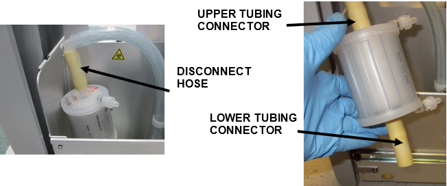
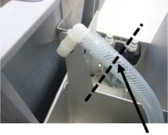
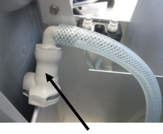
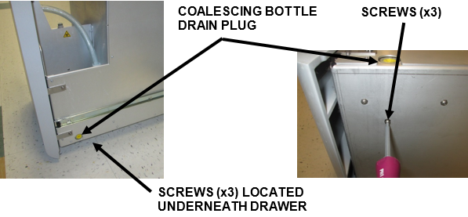
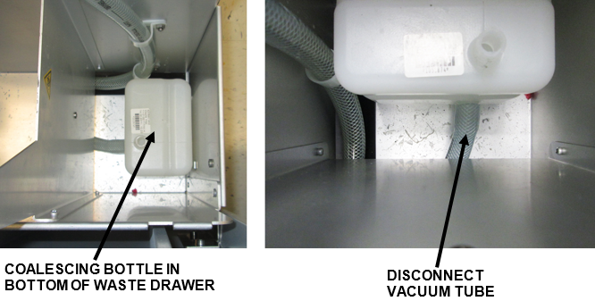
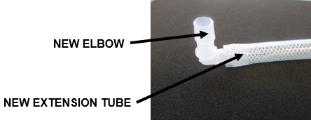
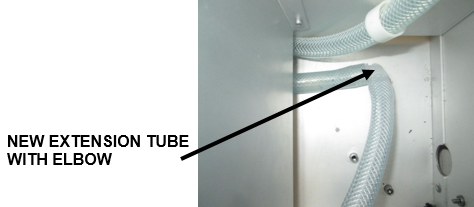
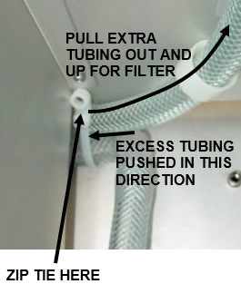
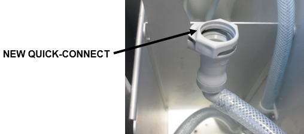
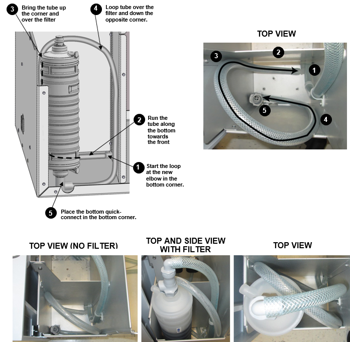

Odorcarb Vacuum Filter Upgrade Procedure
|
|
Do NOT upgrade a T8 filter to the Odorcarb filter, until directed. |
Parts and Materials Required
- Panther Tool Kit
To replace the filter only:
- Filter, Odorcarb Refill, 0.2um Cartridge

The Odorcarb filter MUST be replaced every 12 months (from the date of install).
To upgrade to the new Odorcarb Filter:
- OdorCarb Filter Retrofit Kit
- 2 – Quick Connect Fittings
- 1 – 36” Extension Tube
- 1 – 90° Plastic Elbow Fitting
- 3 – Zip Ties
Time Required
- 1 hour to upgrade from T8 to Odorcarb Filter
Procedure
|
|
Caution—Perform this section only if the new Odorcarb Filter and Retrofit Kit are not installed. |
- Shut down the Panther GUI, Panther System and PC. Turn off main power.
- Open the Waste Drawer, and properly dispose of the waste drawer cover & solid waste bag.
- Empty the Liquid Waste Bottle and set aside.
Note—If the old Waste Bottle male couplings (grey) are still installed, install the new CPC Couplings (white). Refer to Waste Bottle Male Fitting Upgrade. - Remove & discard the T8 Vacuum Filter by
 disconnecting the upper tubing connector from its elbow fitting and the lower tubing connector from the Coalescing Bottle. Discard the T8 Filter. Ensure local laws and regulations are adhered to when disposing of the Vacuum Filter.
disconnecting the upper tubing connector from its elbow fitting and the lower tubing connector from the Coalescing Bottle. Discard the T8 Filter. Ensure local laws and regulations are adhered to when disposing of the Vacuum Filter.
- Using a tubing cutter (or utility knife), remove the old elbow fitting from the vacuum tubing by cutting the tubing as close to the end of the elbow fitting as possible.
Note—If too much tubing is removed it will be too short to accommodate the new filter. 
- Insert a quick-connect fitting (from the Filter retrofit kit) onto the end of the newly cut vacuum tubing. This is now the TOP quick-connect.

- Unscrew the three Philips screws on the bottom of the Waste Drawer, just below the Coalescing Drain Plug, to free the Coalescing Bottle.
Note—The three Philips screws can be removed using a Chapman driver tool set or similar tool without removing the Waste Drawer from the rails. (The image on the right below shows the drawer removed for illustration purposes only.) 
- Pull the Coalescing Bottle off its vacuum tube fitting. Remove the Coalescing Bottle from the drawer and discard it. Ensure local laws and regulations are adhered to when disposing of the Coalescing Bottle.

- Take a plastic elbow and extension tube from the retrofit kit and insert one end of the elbow into the extension tube.

- Attach the extension tube to the vacuum tube exiting the liquid waste bottle (the tube that was previously connected to the bottom of the coalescing bottle).
Note—If the end of the vacuum tube has an angled cut on the end, use the tubing cutter or utility knife to make a straight cut so the tube fits securely on the plastic elbow. 
- Zip tie the two tubes loosely together in the bottom corner of the waste drawer.
- Ensure the new elbow fitting is positioned so that both tubes connected to it are flat against the bottom of the drawer and the elbow is next to the dividing wall.
- This may require pushing excess tubing back towards the Liquid Waste Bottle side.
- Pull the other tube upwards to provide as much extra tubing as possible for the TOP quick-connect Filter (Top of the OdorCarb Filter). Be sure not to put excessive tension on the tubing.
- Once this has been done securely tighten the zip tie.

- Attach a quick-connect (from the retrofit kit) to the other end of the extension tube. This is now the Bottom quick-connect.

- Connect the bottom of the new OdorCarb filter to the extension tube.
Verify arrows on the filter are pointing UP. - Connect the top of the new filter to the Top quick-connect on the other vacuum tube. Slide the new connected filter into the drawer.
- Route the extension tube in a loop from the new plastic elbow in the bottom corner, up and around the new filter, and back down underneath. The illustration and images below show the best way to route the extension tube.
Note—The extension tube loop should be placed so that there is a minimum of stress, bending, sharp corners or twists of the tube to ensure proper operation of the vacuum system. 
- Reseat the Liquid Waste Bottle.
- Install a new Solid Waste bag & Waste Drawer Cover.
- Close the Waste Drawer.


Verification
- From Panther Service Software:
- Verify vacuum levels are within specification.
[ -203mBar (6inHg) to -270mBar (8 inHg)] - Verify that the Waste Drawer Full and Empty sensors work.
- Verify the Waste Drawer closes, latches and locks correctly.
- From Panther GUI software, successfully complete a full Prime Operation of pumping fluid through tubing to ensure proper and consistent fluid delivery (remove air from the tubing, etc.)..
 button at the top of the page to send feedback, comments, or change requests.
button at the top of the page to send feedback, comments, or change requests.